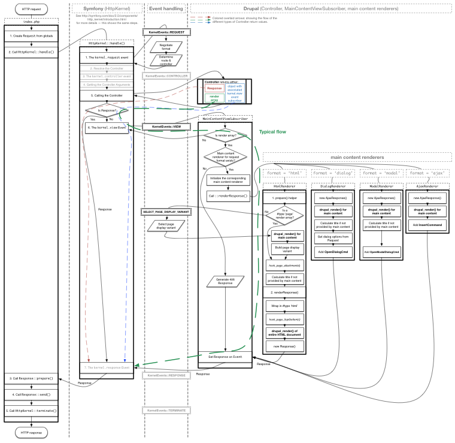
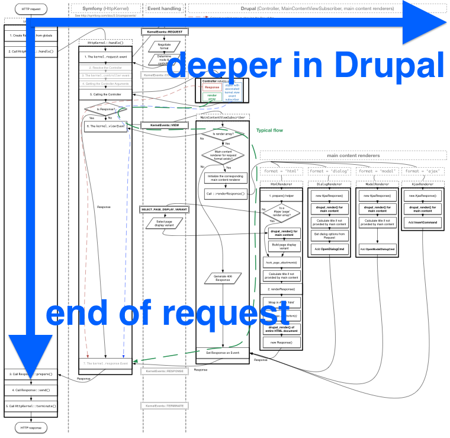
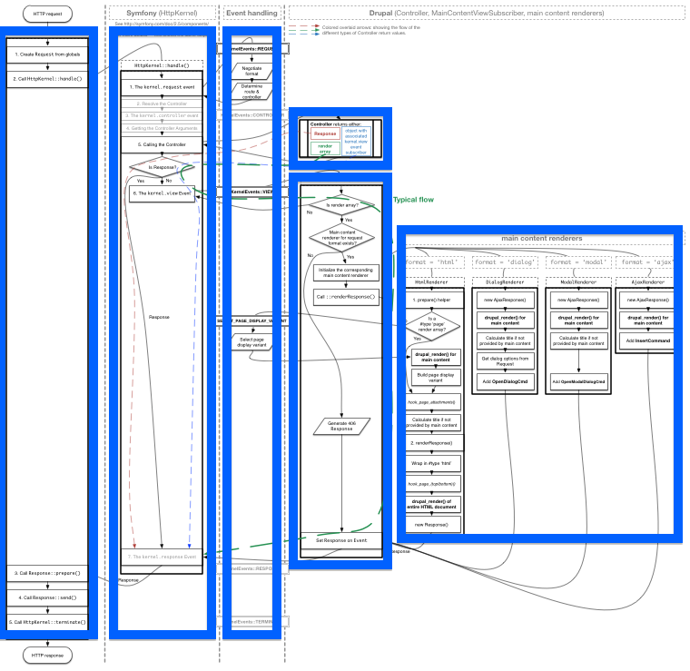
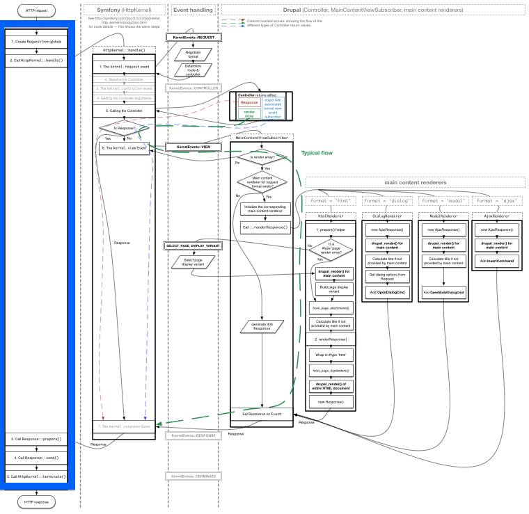
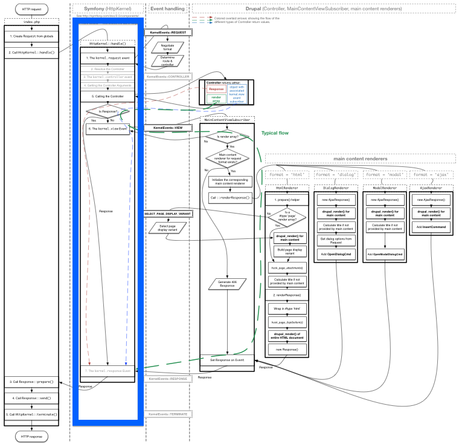
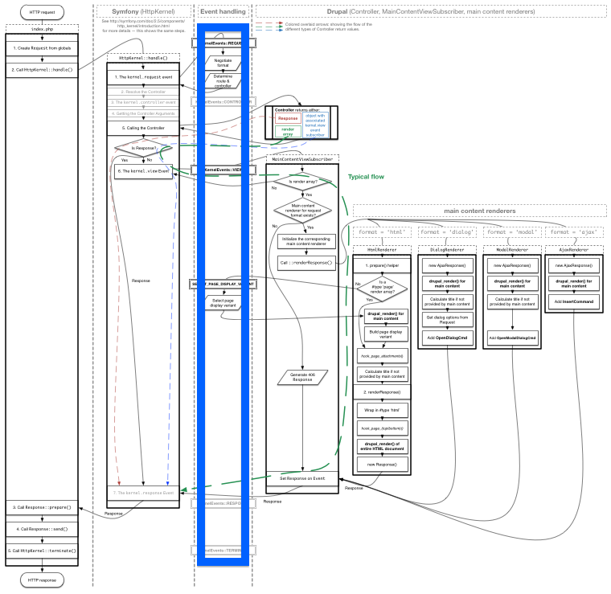
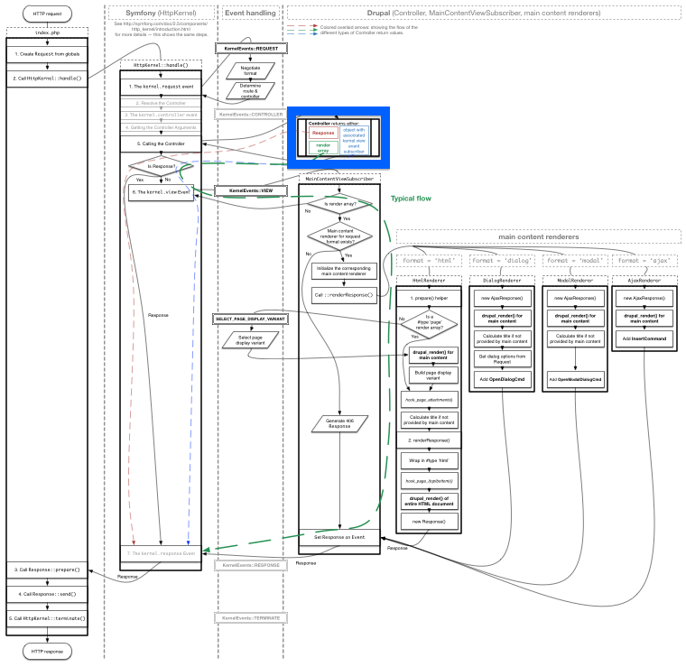
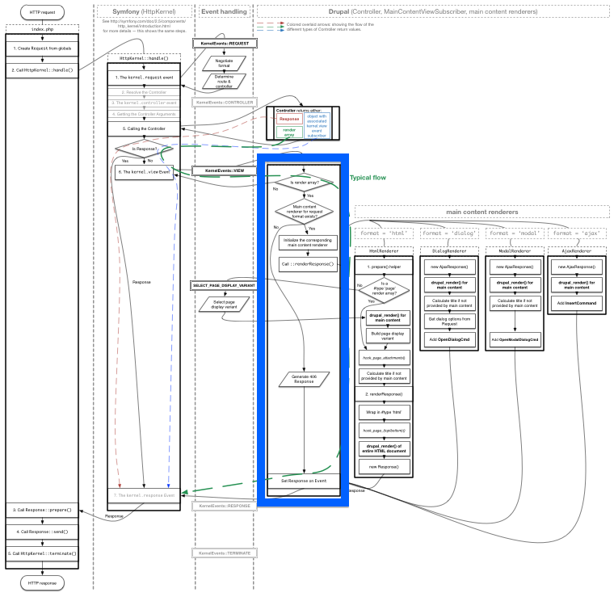
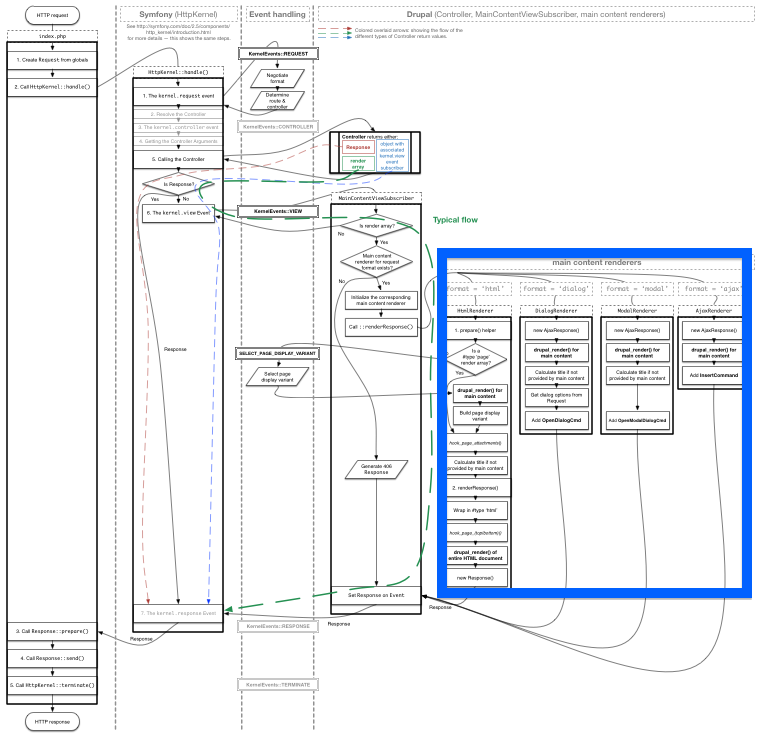
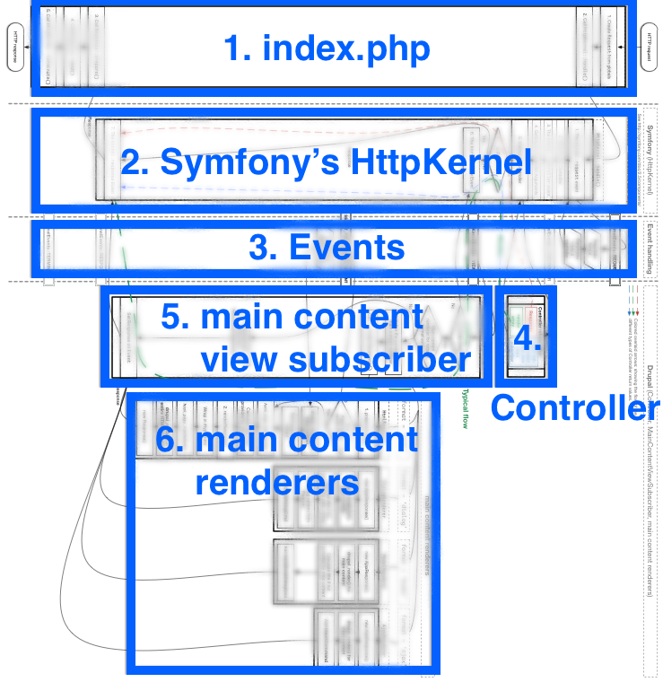

The render pipeline
Drupal 8
… while waiting for this talk to start, please already download
wimleers.com/drupal-8-render-pipeline.pdf
Thanks! :)
The render pipeline
Drupal 8
wimleers.com
@wimleers
Senior Software Engineer
Office of the CTO, Acquia
Our guide

The Diagram
This is a map of Drupal 8!
…with driving instructions!
In this talk, we're going to look at each area on the map.
…and at the end, you should feel like you understand Drupal 8!
Please download the PDF and follow along!
wimleers.com/d8-render-pipeline.pdf
Without the driving instructions
Orientation points
The steps
Step 1: index.php

What is it?
- Just like all previous Drupal versions!
- What Symfony calls a front controller
The front controller is a well-known design pattern; it is a section of code that all requests served by an application run through.
- Symfony convention:
app.php
Responsibilities?
- Create Symfony
Request $request - Create
HttpKernel(initialize container,settings.php) $response = HttpKernel::handle($request)$response->prepare()$response->send()HttpKernel::terminate()
Should be familiar to any Symfony developer!
Step 2: HttpKernel::handle()

What is it?
- Like an arbitrator: decides what happens
HttpKernelis the ♥ of Symfony & Drupal!
See symfony.com/doc/2.5/components/http_kernel/introduction.html
Responsibilities?
- Event:
REQUEST(negotiation + routing) - Load Controller (
_controller) - Event:
CONTROLLER(last second overriding) - Get Controller arguments (introspection, parameter converters)
- Call the Controller
- If the result is a
Response: all done! Otherwise… - Event:
VIEW(event subscriber must turn it into aResponse) - Event:
RESPONSE(last second modifying)
Possibilities?
kernel.requestkernel.controllerkernel.viewkernel.response
⬇
Anything is possible!
Step 3: Symfony events
What are they?
- Many triggered by
HttpKernel::handle() - The glue between Symfony and Drupal
- Drupal can of course also trigger events, and does!
Step 4: Controller
What is it?
The application logic!
In Drupal 7: a page callback.
Determines the content of the response.
Responsibilities?
Return either:
- A
Responseobject - A render array
- An object
(with associatedVIEWevent subscriber)
Possibilities?
Response: fully control what's sent- Render array: let Drupal take care of sending
- Object: semantic data… >1 view subscribers can operate
E.g.: a
TabularDataobject: rendered as a CSV file response, or a HTML table, or a PDF file, or …
Step 5: MainContent ViewSubscriber

What is it?
The render array-to-response arbitrator logic!
Responsibilities?
- View subscriber that handles (only!) render arrays
- Selects & calls a main content renderer (~ negotiated format)
Possibilities?
Another view subscriber could turn a "semantic data object" into a render array…
…and then have this view subscriber render it!
E.g.: a TabularData object: some view subscriber turns it into a
'#type' => 'table' render array.
Step 6: main content renderers
What are they?
The actual render array-to-response logic!
One "main content renderer"-tagged service per format.
Responsibilities?
- Transform a render array into a
Response. - Drupal 8 already supports:
htmltext/htmlajaxapplication/vnd.drupal-ajaxdialogapplication/vnd.drupal-dialogmodalapplication/vnd.drupal-modal
Possibilities?
Add main content renderer
services to support more formats!
Big picture
The Diagram
Orientation
The steps
Step 7: the HTML main content renderer
Let's take a closer look at the most interesting part inside step 6!
What is it?
- The most commonly used render array-to-response logic!
(Because the web is all about HTML!) - Supports page display variants
- Alternative methods of rendering main content
- ⇒ alternative ways of filling
page.html.twig - e.g.: Block, Panels, Page Manager…
- Default:
BlockPageVariant(main content with blocks around it)
Responsibilities?
Fill page.html.twig + render into Response
- If
'#type' => 'page'(page.html.twig) go to 4 - Trigger the
SELECT_PAGE_DISPLAY_VARIANTevent - Build selected page display variant (returns
'#type' => 'page') - Wrap in
'#type' => 'html'(html.html.twig) drupal_render()everything!
Possibilities?
- Panels, Page Manager et cetera … without hacks!
- Something none of us have even thought of yet?
- A
BigPipeBlockPageVariant… ? :)
See “BigPipe: Pipelining web pages for high performance”
More about render arrays
Significantly improved rendering of render arrays in Drupal 8.
Too much for this talk, but will cover each in one slide:
- Assets
- Cache tags — see the talks above and below
- Bubbling
- Render caching — see “Render caching in Drupal 7 and 8”
Assets
Drupal 7:
Not in Drupal 8: asset dependencies!
Cache tags
“How to clear all entries containing node 42?”
⬇
Impossible!
⬇
Cache tags!
// Associate the 'node:42' cache tag with the render array.
$node = Node::load(42);
$build['#cache']['tags'] = $node->getCacheTags();
// Automatically invalidates the 'node:42' cache tag!
$node->save();
See talks “Building really fast websites with Drupal 8” &
“Render caching in Drupal 7 and 8”
Bubbling
Just like JavaScript events!
<html>
</html>X-Drupal-Cache-Tags header: efficient Varnish purging!
See talk “Render caching in Drupal 7 and 8”
Render caching
Needs asset dependencies + cache tags + bubbling!
See talks “Building really fast websites with Drupal 8” &
“Render caching in Drupal 7 and 8”
Let's visualize cache tag bubbling and render caching…
View demo (yellow outlines: cache tags, green inset shadows: render cached)